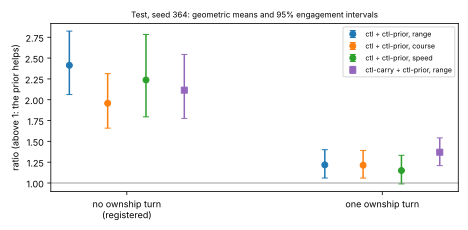
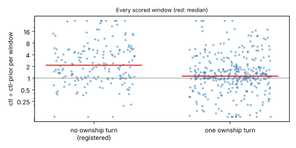
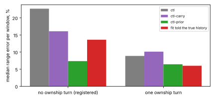
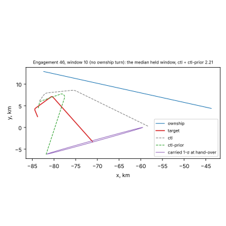

The carried prior where the ownship holds course
2026-11-19 · spec 029 · seeds 362 (tuning), 363 (validation), 364 (test) · gitma2
The owner's case
- Spec 028: the ownship turned every 20–40 min, so no window was blind
- Here: ownship legs of 1–2 h; 1-hour windows; 30% of them hold no ownship turn
- The same ctl-prior as spec 028 (state and uncertainty handed on), the tended contact
Registered rule: gain if ctl ÷ ctl-prior on turn-free windows has its lower limit above 1.
Registered rule: gain, no harm

No ownship turn: 2.41 [2.06, 2.83]; one turn 1.22 [1.06, 1.40]. Seeds agree: 2.10, 1.91, 2.41.
In the typical window, not a tail

Turn-free windows: median 2.15; 76% better, 51% twice as good, 9% twice as bad.
Error per window

Turn-free windows: ctl 22.7%, ctl-prior 7.4%. The fit told the true history (13.6%) sees only the window, so it is no ceiling here.
The median turn-free window

What the panel narrowed
- Against the same 1-hour window alone; 2-hour ctl and a joint solve not tested
- Mechanism: range observability the window lacks; history counts not measured
- Grows with range: 1.66 under 15 km, 3.19 beyond 25 km
- One simulator, contact 1; windows placed by truth; hand-over defect kept
Next (the owner's choice)
- Recommended: adopt ctl-prior for the tended contact; then register ctl-prior (1 h) against ctl (2 h) and a joint solve
- Or: repair the hand-over · the untended contact · close the track
Write-up: /blog/2026/11/19/held-course · Record: experiments/20261119-hold/ · Figures: scripts/research/hold_charts.py